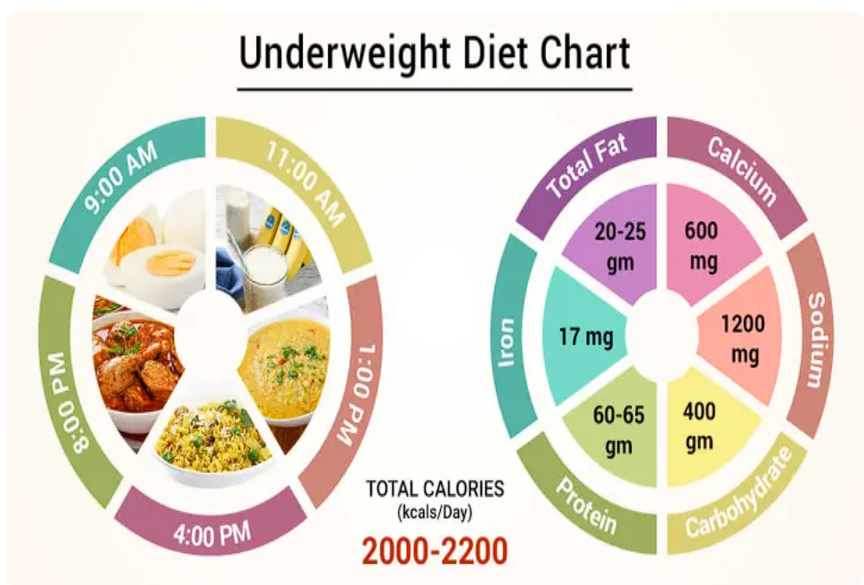
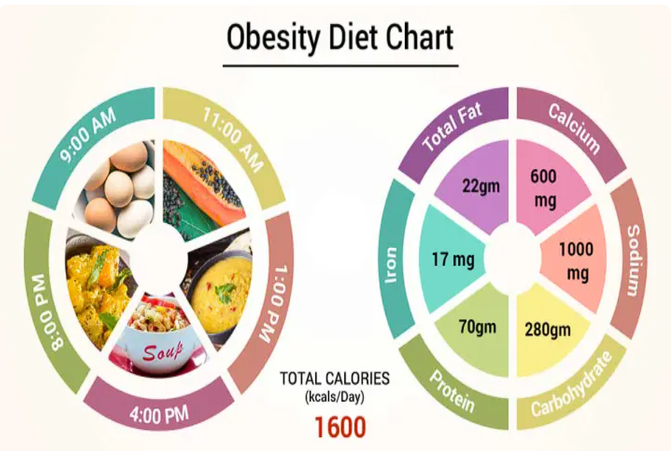
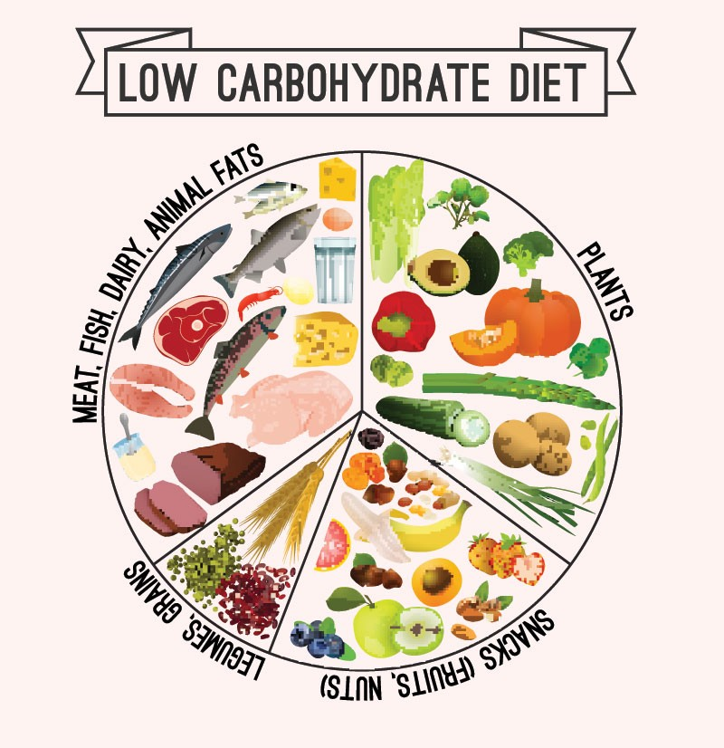

Pull Ups
Pull-ups are a fundamental and challenging upper body exercise that primarily targets the muscles in your arms, back, and shoulders. They are considered one of the most effective bodyweight exercises for building upper body strength and muscular development.
Pull-ups primarily target the following muscle groups:
Latissimus Dorsi (Lats): The largest muscles in your back, located on the sides and middle of your back. Pull-ups heavily engage the lats, helping to develop width and thickness in this area.
Biceps Brachii: The muscles located on the front of your upper arms. Pull-ups are an excellent exercise for targeting and strengthening the biceps.
Rhomboids: Located between your shoulder blades, the rhomboids are responsible for pulling your shoulder blades together during the pull-up motion.
Trapezius: A large muscle that spans the back of your neck and upper back. Pull-ups help develop the upper portion of the trapezius, contributing to a strong and well-defined upper back.
Posterior Deltoids: Located in your shoulders, the posterior deltoids assist in the pulling motion during pull-ups.
Here's a step-by-step guide on how to perform a standard pull-up:
1.Hang from a pull-up bar with an overhand grip (palms facing away from you), slightly wider than shoulder-width apart. Alternatively, you can use an underhand grip (palms facing towards you) for a variation called chin-ups.
2.Start with your arms fully extended, and your body hanging freely. Engage your core muscles to maintain stability throughout the exercise.
3.Initiate the pull by squeezing your shoulder blades together and pulling your body upward, leading with your elbows. Aim to bring your chin above the bar.
4.Pause briefly at the top of the movement, and then slowly lower yourself back to the starting position with control, fully extending your arms.
Repeat the exercise for the desired number of repetitions.
Chest Press
The Chest Press is a popular strength training exercise that targets the muscles of the chest, shoulders, and triceps. It is typically performed using a barbell, dumbbells, or a chest press machine. The exercise is also known as the Bench Press, as it is commonly performed lying on a flat bench.
Here's a step-by-step guide on how to perform the Chest Press exercise using dumbbells:
1. Start by lying flat on a bench with your feet firmly planted on the ground. Hold a dumbbell in each hand, resting them on your thighs.
2. Slowly lower yourself to lie down on the bench while bringing the dumbbells to the sides of your chest. Your palms should be facing forward, and your elbows should be at a 90-degree angle.
3.Engage your core muscles and maintain a stable position throughout the exercise. Your feet, lower back, and head should remain in contact with the bench.
4.Push the dumbbells upward by extending your arms, while keeping your wrists straight and elbows slightly bent. Exhale during the pushing phase.
5. Continue pressing the dumbbells until your arms are fully extended, but without locking your elbows. Your hands should be directly above your shoulders at the top position.
6.Pause briefly at the top, and then slowly lower the dumbbells back to the starting position, maintaining control and keeping your elbows at a 90-degree angle. Inhale during the lowering phase.
Repeat the exercise for the desired number of repetitions.
Skipping
Skipping, also known as jump rope, is a popular cardiovascular exercise that involves jumping over a rope as it passes under your feet. It is a simple yet effective form of exercise that offers numerous health and fitness benefits. Skipping can be performed with a variety of techniques and variations, making it suitable for individuals of all fitness levels.
Here's a description of how to perform basic skipping:
1.Start by holding the handles of a jump rope, one in each hand, with your palms facing forward. Position the rope behind you, resting on the ground.
2.Stand with your feet together and your knees slightly bent. Maintain an upright posture with your shoulders relaxed.
3.Begin the skipping motion by swinging the rope over your head and in front of your body. As the rope comes towards your feet, jump slightly off the ground, just enough to allow the rope to pass underneath you.
4.As the rope reaches the ground, continue the jumping motion and repeat the process, aiming to jump over the rope with each rotation.
5.Start with a comfortable pace and gradually increase your speed as you become more proficient. You can also experiment with different techniques, such as alternating foot jumps, single leg jumps, or double unders (rotating the rope twice with each jump).
Maintain a steady rhythm and breathing pattern throughout the exercise. Focus on landing softly on the balls of your feet and using your wrists and forearms to rotate the rope.
Running
Running is a popular form of aerobic exercise that involves moving rapidly on foot, typically at a faster pace than walking. It is a versatile and accessible activity that can be performed outdoors or indoors on a treadmill. Running offers numerous physical, mental, and overall health benefits.
Here's a description of running and its benefits:
1.Getting Started: To start running, find a suitable location such as a track, park, or neighborhood with safe and supportive surfaces. Wear comfortable running shoes and clothing that allows for freedom of movement. Begin with a warm-up consisting of light jogging or brisk walking to prepare your muscles and gradually increase your heart rate.
2.Proper Form: Maintain an upright posture with your head facing forward and shoulders relaxed. Keep your arms bent at a 90-degree angle and swing them naturally back and forth. Land softly on the midfoot, rolling through to the toes, and push off the ground with each stride.
3.Pace and Distance: Start with a comfortable pace and gradually increase your speed and distance over time. Listen to your body and adjust your running intensity to match your fitness level. Use a tracking device or smartphone app to monitor your distance, pace, and progress.
4.Physical Benefits: Running is a highly effective cardiovascular exercise that improves heart and lung health. It strengthens the leg muscles, including the quadriceps, hamstrings, and calves. Regular running can enhance endurance, speed, and overall fitness level.
5.Weight Management: Running is an excellent calorie-burning exercise that can aid in weight loss or weight maintenance. It helps to increase the metabolic rate and burn excess calories, contributing to a healthy body composition.
6.Bone Health: Running is a weight-bearing exercise that helps build and maintain strong bones. Regular running can reduce the risk of osteoporosis and improve bone density, especially in weight-bearing bones like the hips and legs.
7.Mental Well-being: Running has significant mental health benefits. It can reduce stress, anxiety, and symptoms of depression. Running releases endorphins, the body's natural feel-good hormones, promoting a positive mood and overall mental well-being.
8.Social Opportunities: Running can be a solitary activity, providing time for introspection and self-reflection. It can also be a social activity, joining running groups or participating in organized races. Running with others can offer motivation, support, and a sense of community.
9.Flexibility and Convenience: Running can be adapted to fit various schedules and lifestyles. It requires minimal equipment, and you can run almost anywhere, making it a flexible and convenient exercise option.
Running
Running is a popular form of aerobic exercise that involves moving rapidly on foot, typically at a faster pace than walking. It is a versatile and accessible activity that can be performed outdoors or indoors on a treadmill. Running offers numerous physical, mental, and overall health benefits.
Here's a description of running and its benefits:
1.Getting Started: To start running, find a suitable location such as a track, park, or neighborhood with safe and supportive surfaces. Wear comfortable running shoes and clothing that allows for freedom of movement. Begin with a warm-up consisting of light jogging or brisk walking to prepare your muscles and gradually increase your heart rate.
2.Proper Form: Maintain an upright posture with your head facing forward and shoulders relaxed. Keep your arms bent at a 90-degree angle and swing them naturally back and forth. Land softly on the midfoot, rolling through to the toes, and push off the ground with each stride.
3.Pace and Distance: Start with a comfortable pace and gradually increase your speed and distance over time. Listen to your body and adjust your running intensity to match your fitness level. Use a tracking device or smartphone app to monitor your distance, pace, and progress.
4.Physical Benefits: Running is a highly effective cardiovascular exercise that improves heart and lung health. It strengthens the leg muscles, including the quadriceps, hamstrings, and calves. Regular running can enhance endurance, speed, and overall fitness level.
5.Weight Management: Running is an excellent calorie-burning exercise that can aid in weight loss or weight maintenance. It helps to increase the metabolic rate and burn excess calories, contributing to a healthy body composition.
6.Bone Health: Running is a weight-bearing exercise that helps build and maintain strong bones. Regular running can reduce the risk of osteoporosis and improve bone density, especially in weight-bearing bones like the hips and legs.
7.Mental Well-being: Running has significant mental health benefits. It can reduce stress, anxiety, and symptoms of depression. Running releases endorphins, the body's natural feel-good hormones, promoting a positive mood and overall mental well-being.
8.Social Opportunities: Running can be a solitary activity, providing time for introspection and self-reflection. It can also be a social activity, joining running groups or participating in organized races. Running with others can offer motivation, support, and a sense of community.
9.Flexibility and Convenience: Running can be adapted to fit various schedules and lifestyles. It requires minimal equipment, and you can run almost anywhere, making it a flexible and convenient exercise option.
Bench Press
The Bench Press is a popular compound exercise that primarily targets the muscles of the chest (pectoralis major), shoulders (deltoids), and triceps. It is often performed with a barbell or dumbbells while lying on a flat bench. The Bench Press is an effective exercise for building upper body strength, muscle mass, and power.
Here's a description of how to perform the Bench Press:
1. Setup: Lie flat on a bench with your feet firmly planted on the floor. Position yourself so that your eyes align with the barbell or dumbbells when they are racked. Your head, upper back, and glutes should be in contact with the bench.
2.Grip: Grasp the barbell with a grip slightly wider than shoulder-width apart. Your palms should be facing forward, and your hands should be positioned directly above your elbows when the barbell is lowered to your chest. If using dumbbells, hold one in each hand with your palms facing forward.
3. Unrack the Weight: With a controlled motion, unrack the barbell or lift the dumbbells from the rack and hold them directly above your chest with your arms extended. Make sure your wrists are aligned with your forearms, and your elbows are not flaring out excessively.
4.Descent: Lower the barbell or dumbbells to your chest by bending your elbows. Aim to bring the weight to the middle or lower part of your chest while maintaining control and a full range of motion. Keep your elbows at around a 45-degree angle to your body.
5.Pause: Briefly pause at the bottom of the movement, with the weight just above your chest. This allows you to maintain control and engage the target muscles.
6.Press: Push the barbell or dumbbells back up to the starting position by extending your arms and engaging your chest, shoulders, and triceps. Focus on exerting force through your hands and driving the weight upward. Maintain control and avoid locking out your elbows at the top.
7.Breathing: Inhale as you lower the weight towards your chest, and exhale as you press it back up to the starting position.
8.Repetitions and Sets: Perform the desired number of repetitions and sets, resting between sets as needed. It is important to choose a weight that allows you to maintain proper form throughout the exercise.
Dead Lift
The Deadlift is a compound exercise that targets multiple muscle groups, including the lower back, glutes, hamstrings, and upper body. It is widely regarded as one of the most effective and functional exercises for developing overall strength and power. The Deadlift involves lifting a loaded barbell or other weighted object from the ground to a standing position while maintaining proper form and technique.
Here's a description of how to perform the conventional Deadlift, which is the most common variation:
1.Approach the barbell with your feet hip-width apart, toes pointing forward. The barbell should be centered over the middle of your feet.
2.Bend your knees and lower your hips, maintaining a neutral spine and a flat back. Grip the barbell with your hands just outside your knees, using either an overhand grip or a mixed grip (one hand overhand, one hand underhand).
3.Take a deep breath, brace your core, and engage your lats (the muscles on the sides of your back). This will help stabilize your body throughout the lift.
4.Begin the lift by driving through your heels, extending your hips and knees simultaneously. Keep the barbell close to your body as you lift, maintaining a straight bar path.
5.As you stand up, focus on squeezing your glutes and maintaining a neutral spine. Avoid hyperextending your back or leaning too far backward.
6.At the top of the lift, lock out your hips and knees, with your shoulders pulled back and down. Your body should be in a straight line from head to heels.
7.To lower the barbell back to the ground, hinge at the hips and bend your knees while maintaining control. Keep the barbell close to your body during the descent.
8.Repeat the movement for the desired number of repetitions, maintaining proper form and technique throughout.
Pudh Ups
Push-ups are a classic bodyweight exercise that primarily targets the muscles of the upper body, including the chest, shoulders, and triceps. They are highly versatile, requiring no equipment, and can be performed virtually anywhere. Push-ups are an effective exercise for building strength, endurance, and muscular definition in the upper body.
Here's a description of how to perform a basic push-up:
1.Starting Position: Begin in a prone position on the floor with your hands slightly wider than shoulder-width apart. Your toes should be in contact with the floor, and your body should form a straight line from head to heels.
2.Hand and Arm Placement: Position your hands on the floor, fingers pointing forward or slightly outward. Spread your fingers for better stability and distribute your weight evenly across your palms. Your arms should be fully extended, but not locked out.
3.Core Engagement: Engage your core muscles by pulling your navel in toward your spine. This will help maintain a straight body alignment throughout the exercise.
4.Descent: Lower your body by bending your elbows and allowing them to flare out slightly to the sides. Keep your body straight and avoid sagging or arching your back. Lower your chest towards the floor while maintaining control and a full range of motion.
5.Chest Position: Aim to lower your chest until it is parallel to the floor or slightly below. This will ensure proper depth and engagement of the target muscles.
6.Ascend: Push through your hands and extend your elbows to raise your body back up to the starting position. Keep your body straight and avoid locking out your elbows at the top.
7.Breathing: Inhale as you lower your body down, and exhale as you push yourself back up.
8.Repetitions and Sets: Perform the desired number of repetitions and sets, gradually increasing the intensity as your strength improves.
Running
Running is a popular form of aerobic exercise that involves moving rapidly on foot, typically at a faster pace than walking. It is a versatile and accessible activity that can be performed outdoors or indoors on a treadmill. Running offers numerous physical, mental, and overall health benefits.
Here's a description of running and its benefits:
1.Getting Started: To start running, find a suitable location such as a track, park, or neighborhood with safe and supportive surfaces. Wear comfortable running shoes and clothing that allows for freedom of movement. Begin with a warm-up consisting of light jogging or brisk walking to prepare your muscles and gradually increase your heart rate.
2.Proper Form: Maintain an upright posture with your head facing forward and shoulders relaxed. Keep your arms bent at a 90-degree angle and swing them naturally back and forth. Land softly on the midfoot, rolling through to the toes, and push off the ground with each stride.
3.Pace and Distance: Start with a comfortable pace and gradually increase your speed and distance over time. Listen to your body and adjust your running intensity to match your fitness level. Use a tracking device or smartphone app to monitor your distance, pace, and progress.
4.Physical Benefits: Running is a highly effective cardiovascular exercise that improves heart and lung health. It strengthens the leg muscles, including the quadriceps, hamstrings, and calves. Regular running can enhance endurance, speed, and overall fitness level.
5.Weight Management: Running is an excellent calorie-burning exercise that can aid in weight loss or weight maintenance. It helps to increase the metabolic rate and burn excess calories, contributing to a healthy body composition.
6.Bone Health: Running is a weight-bearing exercise that helps build and maintain strong bones. Regular running can reduce the risk of osteoporosis and improve bone density, especially in weight-bearing bones like the hips and legs.
7.Mental Well-being: Running has significant mental health benefits. It can reduce stress, anxiety, and symptoms of depression. Running releases endorphins, the body's natural feel-good hormones, promoting a positive mood and overall mental well-being.
8.Social Opportunities: Running can be a solitary activity, providing time for introspection and self-reflection. It can also be a social activity, joining running groups or participating in organized races. Running with others can offer motivation, support, and a sense of community.
9.Flexibility and Convenience: Running can be adapted to fit various schedules and lifestyles. It requires minimal equipment, and you can run almost anywhere, making it a flexible and convenient exercise option.
Plank
The plank exercise is a popular core-strengthening exercise that primarily targets the abdominal muscles, but also engages the muscles in the back, shoulders, and legs. It is known for its simplicity and effectiveness in building core stability and endurance. Here's a description of how to perform a basic plank exercise:
Here's a description of how to perform basic plank:
1. Starting Position: Begin by positioning yourself face-down on the floor, with your forearms resting on the ground parallel to your body. Keep your elbows directly under your shoulders and your forearms facing forward. Extend your legs straight back, resting on the balls of your feet.
2.Alignment: Ensure your body forms a straight line from your head to your heels, maintaining a neutral spine. Avoid letting your hips sag or lifting your hips too high, as this can strain your lower back.
3.Engage Your Core: Tighten your abdominal muscles by drawing your navel towards your spine. This activation helps to stabilize your torso and protect your lower back.
4.Hold the Position: Maintain the plank position, focusing on keeping your body aligned and your core engaged. Aim to hold the position for a specific duration, such as 30 seconds or longer, depending on your fitness level.
5.Breathing: Remember to breathe steadily throughout the exercise. Avoid holding your breath, as it can interfere with your stability and overall performance.
6.Modification: If you're new to planks or find them challenging, you can modify the exercise by dropping down to your knees instead of your feet. The rest of the form and alignment remain the same.
Skipping
Skipping, also known as jump rope, is a popular cardiovascular exercise that involves jumping over a rope as it passes under your feet. It is a simple yet effective form of exercise that offers numerous health and fitness benefits. Skipping can be performed with a variety of techniques and variations, making it suitable for individuals of all fitness levels.
Here's a description of how to perform basic skipping:
1.Start by holding the handles of a jump rope, one in each hand, with your palms facing forward. Position the rope behind you, resting on the ground.
2.Stand with your feet together and your knees slightly bent. Maintain an upright posture with your shoulders relaxed.
3.Begin the skipping motion by swinging the rope over your head and in front of your body. As the rope comes towards your feet, jump slightly off the ground, just enough to allow the rope to pass underneath you.
4.As the rope reaches the ground, continue the jumping motion and repeat the process, aiming to jump over the rope with each rotation.
5.Start with a comfortable pace and gradually increase your speed as you become more proficient. You can also experiment with different techniques, such as alternating foot jumps, single leg jumps, or double unders (rotating the rope twice with each jump).
Maintain a steady rhythm and breathing pattern throughout the exercise. Focus on landing softly on the balls of your feet and using your wrists and forearms to rotate the rope.
Cycling
Cycling is a popular and versatile form of exercise that provides numerous health benefits while being enjoyable and accessible for people of all fitness levels. Here's a description of cycling and its benefits:
Cycling involves riding a bicycle, either outdoors or using a stationary bike indoors. It engages the large muscles of the legs, including the quadriceps, hamstrings, and calves, while also activating the muscles in the core and the upper body for stability and control.
Benefits of cycling:
1.Cardiovascular Health: Cycling is an excellent cardiovascular exercise that gets your heart pumping, increasing your heart rate and improving your overall cardiovascular fitness. Regular cycling helps strengthen the heart, lower blood pressure, and reduce the risk of heart diseases.
2.Weight Loss and Management: Cycling is a calorie-burning activity that can aid in weight loss and weight management. It helps to increase metabolism, burn fat, and build lean muscle mass. The intensity and duration of your cycling sessions will determine the number of calories burned.
3.Joint-Friendly: Cycling is a low-impact exercise that puts less stress on the joints compared to high-impact activities like running. It provides an excellent alternative for individuals with joint issues or those seeking a lower-impact exercise option.
4.Strength and Muscle Tone: Cycling primarily targets the muscles in the lower body, including the quadriceps, hamstrings, glutes, and calves. It helps to strengthen and tone these muscles, leading to improved leg strength, endurance, and overall lower body definition.
5.Mental Well-being: Cycling not only benefits physical health but also contributes to mental well-being. It is a great way to reduce stress, improve mood, and boost mental clarity and focus. Cycling outdoors also offers the opportunity to connect with nature and enjoy fresh air and scenic surroundings.
6.Convenience and Accessibility: Cycling is a flexible exercise that can be easily incorporated into daily routines. You can cycle outdoors, exploring different routes and enjoying the outdoors, or use a stationary bike indoors, which allows for consistent exercise regardless of weather conditions.
Cycling
Cycling is a popular and versatile form of exercise that provides numerous health benefits while being enjoyable and accessible for people of all fitness levels. Here's a description of cycling and its benefits:
Cycling involves riding a bicycle, either outdoors or using a stationary bike indoors. It engages the large muscles of the legs, including the quadriceps, hamstrings, and calves, while also activating the muscles in the core and the upper body for stability and control.
Benefits of cycling:
1.Cardiovascular Health: Cycling is an excellent cardiovascular exercise that gets your heart pumping, increasing your heart rate and improving your overall cardiovascular fitness. Regular cycling helps strengthen the heart, lower blood pressure, and reduce the risk of heart diseases.
2.Weight Loss and Management: Cycling is a calorie-burning activity that can aid in weight loss and weight management. It helps to increase metabolism, burn fat, and build lean muscle mass. The intensity and duration of your cycling sessions will determine the number of calories burned.
3.Joint-Friendly: Cycling is a low-impact exercise that puts less stress on the joints compared to high-impact activities like running. It provides an excellent alternative for individuals with joint issues or those seeking a lower-impact exercise option.
4.Strength and Muscle Tone: Cycling primarily targets the muscles in the lower body, including the quadriceps, hamstrings, glutes, and calves. It helps to strengthen and tone these muscles, leading to improved leg strength, endurance, and overall lower body definition.
5.Mental Well-being: Cycling not only benefits physical health but also contributes to mental well-being. It is a great way to reduce stress, improve mood, and boost mental clarity and focus. Cycling outdoors also offers the opportunity to connect with nature and enjoy fresh air and scenic surroundings.
6.Convenience and Accessibility: Cycling is a flexible exercise that can be easily incorporated into daily routines. You can cycle outdoors, exploring different routes and enjoying the outdoors, or use a stationary bike indoors, which allows for consistent exercise regardless of weather conditions.
Water Aerobics
Water aerobics, also known as aqua aerobics or water exercise, is a form of low-impact aerobic activity performed in water. It combines elements of cardiovascular exercise, strength training, and flexibility exercises in a supportive aquatic environment. Here's a description of water aerobics:
1.Pool Setting: Water aerobics is typically performed in a shallow pool, often chest-deep or waist-deep, where participants can comfortably stand and move around. The water provides buoyancy, reducing the impact on joints and making movements easier and less stressful on the body.
2.Warm-up: A typical water aerobics class starts with a warm-up session to gradually increase the heart rate and prepare the body for more intense movements. This may include marching or jogging in place, arm swings, or gentle stretching exercises.
3.Cardiovascular Exercises: The main component of water aerobics is cardiovascular exercises that elevate the heart rate and improve cardiovascular fitness. These exercises can include movements like jogging or walking in the water, jumping jacks, cross-country skiing motions, or kickboxing-inspired moves. The resistance of the water adds an additional challenge to the workout, enhancing muscle engagement and calorie burning.
4.Strength and Resistance Training: Water provides natural resistance, making it an excellent medium for strength training. Exercises like water squats, leg kicks, arm curls, and chest presses can be performed using water dumbbells or resistance equipment designed specifically for water aerobics. These exercises help improve muscle strength and endurance.
5.Flexibility and Stretching: Water aerobics classes often incorporate stretches and exercises that improve flexibility and range of motion. These can include gentle stretching movements, yoga-inspired poses, and exercises targeting specific muscle groups.
6.Cool-down and Relaxation: Similar to any exercise routine, water aerobics sessions end with a cool-down period to gradually lower the heart rate and promote relaxation. It typically involves slower, controlled movements and gentle stretches to promote recovery and reduce muscle soreness.
Skipping
Skipping, also known as jump rope, is a popular cardiovascular exercise that involves jumping over a rope as it passes under your feet. It is a simple yet effective form of exercise that offers numerous health and fitness benefits. Skipping can be performed with a variety of techniques and variations, making it suitable for individuals of all fitness levels.
Here's a description of how to perform basic skipping:
1.Start by holding the handles of a jump rope, one in each hand, with your palms facing forward. Position the rope behind you, resting on the ground.
2.Stand with your feet together and your knees slightly bent. Maintain an upright posture with your shoulders relaxed.
3.Begin the skipping motion by swinging the rope over your head and in front of your body. As the rope comes towards your feet, jump slightly off the ground, just enough to allow the rope to pass underneath you.
4.As the rope reaches the ground, continue the jumping motion and repeat the process, aiming to jump over the rope with each rotation.
5.Start with a comfortable pace and gradually increase your speed as you become more proficient. You can also experiment with different techniques, such as alternating foot jumps, single leg jumps, or double unders (rotating the rope twice with each jump).
Maintain a steady rhythm and breathing pattern throughout the exercise. Focus on landing softly on the balls of your feet and using your wrists and forearms to rotate the rope.
Running
Running is a popular form of aerobic exercise that involves moving rapidly on foot, typically at a faster pace than walking. It is a versatile and accessible activity that can be performed outdoors or indoors on a treadmill. Running offers numerous physical, mental, and overall health benefits.
Here's a description of running and its benefits:
1.Getting Started: To start running, find a suitable location such as a track, park, or neighborhood with safe and supportive surfaces. Wear comfortable running shoes and clothing that allows for freedom of movement. Begin with a warm-up consisting of light jogging or brisk walking to prepare your muscles and gradually increase your heart rate.
2.Proper Form: Maintain an upright posture with your head facing forward and shoulders relaxed. Keep your arms bent at a 90-degree angle and swing them naturally back and forth. Land softly on the midfoot, rolling through to the toes, and push off the ground with each stride.
3.Pace and Distance: Start with a comfortable pace and gradually increase your speed and distance over time. Listen to your body and adjust your running intensity to match your fitness level. Use a tracking device or smartphone app to monitor your distance, pace, and progress.
4.Physical Benefits: Running is a highly effective cardiovascular exercise that improves heart and lung health. It strengthens the leg muscles, including the quadriceps, hamstrings, and calves. Regular running can enhance endurance, speed, and overall fitness level.
5.Weight Management: Running is an excellent calorie-burning exercise that can aid in weight loss or weight maintenance. It helps to increase the metabolic rate and burn excess calories, contributing to a healthy body composition.
6.Bone Health: Running is a weight-bearing exercise that helps build and maintain strong bones. Regular running can reduce the risk of osteoporosis and improve bone density, especially in weight-bearing bones like the hips and legs.
7.Mental Well-being: Running has significant mental health benefits. It can reduce stress, anxiety, and symptoms of depression. Running releases endorphins, the body's natural feel-good hormones, promoting a positive mood and overall mental well-being.
8.Social Opportunities: Running can be a solitary activity, providing time for introspection and self-reflection. It can also be a social activity, joining running groups or participating in organized races. Running with others can offer motivation, support, and a sense of community.
9.Flexibility and Convenience: Running can be adapted to fit various schedules and lifestyles. It requires minimal equipment, and you can run almost anywhere, making it a flexible and convenient exercise option.
About Underweight

Just like obesity causes health concerns, having less weight than the normal also poses health issues. Being underweight can be result of poor nutrition and should be a matter of concern. If the body does not receive adequate amounts of nutrients, the body fails to function to its utmost. This could result in the imbalance in the metabolism. Inculcating a healthy diet for underweight will provide the necessary nutrients for better functioning of the body.
To deal with underweight, maintaining a proper nutritious diet is important. We create a weight gain meal plan for underweight, easily followed by both males and females. We try to add food with high-calorie foods for underweight adults. This diet meal plan is used to provide the right nutrients, vitamins, and minerals required by the body. You can easily buy food items listed in the underweight diet meal plan in your local markets.
We also list those food items that should be avoided while following the underweight meal plan. While following this Indian diet meal plan, also follow these lifestyle changes and habits. We also listed out meal timing and what food items you need to eat to gain weight. These healthy meals are listed after discussion with professional dietitians.
These are quick health tips for the person suffering from underweight should include this in your diet plan:
- Heavy food items that are more in calories.
- Frequent consumption of food items which are rich in nutrients, it could be snacks, shakes or juices, or proper meals.
- Adding extra ingredients that are high in calories to regular diet, for example, including eggs and bananas in morning breakfast, etc., can help in increasing the weight.
- Consume protein supplements along with adequate amount of vegetables and fruits.
- Eating calorie dense food and maintaining a balanced diet will help in gaining the weight.
- However, the diet shouldn’t be started drastically and instead, should be implemented gradually so that the body is accustomed with it.
Underweight Diet Restrictions : Food Items To limit
- Whole Eggs. Once feared for being high in cholesterol, whole eggs have been making a comeback. ...
- Leafy Greens.
- Salmon.
- Cruciferous Vegetables.
- Lean Beef and Chicken Breast
- Boiled Potatoes.
- Tuna
- Beans and legumes
About NoramlWeight

Maintaining a normal weight is crucial for overall health and well-being. It signifies a balance between a person's weight and their height, indicating that they are within a healthy range for their body type. Achieving and maintaining a normal weight offers numerous benefits, such as reducing the risk of chronic conditions like heart disease, type 2 diabetes, and certain cancers. It also promotes optimal physical functioning, enhances energy levels, and improves self-esteem. Attaining a normal weight involves a combination of healthy eating habits, regular physical activity, and adopting a sustainable lifestyle that supports long-term weight management. Striving for a normal weight can positively impact both physical and mental health, contributing to an overall sense of vitality and improved quality of life.
These are quick health tips for the person suffering from underweight should include this in your diet plan:
- Ensure that your meals are balanced and include a variety of nutrients. Aim to include lean proteins, whole grains, fruits, vegetables, and healthy fats in your diet. This will provide you with essential vitamins, minerals, and fiber.
- Water aerobics or swimming in a pool provides a low-impact, joint-friendly workout. The water's buoyancy reduces the impact on your joints while providing resistance for muscle strengthening.
- Cycling, either outdoors or using a stationary bike, is a low-impact cardiovascular exercise that helps burn calories and improve cardiovascular health. Start with shorter rides at a comfortable pace and gradually increase the duration and intensity.
- Incorporating strength training exercises into your routine can help build muscle, increase metabolism, and improve overall body composition. Begin with light weights or bodyweight exercises and gradually progress as you become stronger. Focus on full-body exercises that engage multiple muscle groups.
- For individuals with limited mobility or who find standing exercises challenging, chair exercises can be beneficial. These exercises can include seated leg raises, arm curls, and seated twists.
- These activities can help improve flexibility, balance, and strength while providing a calming and mindful experience. Look for beginner-friendly classes or modifications for individuals with limited mobility.
About Obesity

A low fat diet, as the name implies, is a dietary pattern that limits the fat intake at about 1/3 of the total daily calories consumed. It consists of little fat, particularly saturated fats and cholesterol which lead to increased blood cholesterol levels and heart attack.
This type of diet plan to reduce obesity focuses on foods that contain whole grains, fruits and vegetables. It is directed towards weight loss and treatment of certain diseases by offering 20 to 30 percent of total daily calories from fat. Plenty of vegetables and proteins in a typical low fat diet supply the body with energy but very little fats.
However, fats should not be eliminated entirely as some dietary fat is needed for good health, supplying energy and fat soluble vitamins like A, D, E and K. Studies have revealed that the right kinds of fats can actually help in losing weight. Hence, the prime focus of healthy diet plan for obesity is on limiting the unhealthy fats and consumption of right amounts of fats.
Low-fat diets have been promoted for the prevention of heart disease. Lowering fat intake from 35-40% of total calories to 15-20% of total calories has been shown to decrease total and LDL cholesterol by 10 to 20%; however, most of this decrease is due to a reduction in saturated fat intake.
Do's And Dont's While following Diet Plan for Obesity
- Rely on soft drinks, sweetened cereals, cookies and cakes, donuts and pastries, chips, and confectionery to get you through the day.
- Don't skip meals. This will tempt you to snack and DO NOT snack between meals
- Avoid eating quickly. Sit and chew each bite. Try using chopsticks!
- Don't food shop when you're hungry.
- Eating calorie dense food and maintaining a balanced diet will help in gaining the weight.
- Don't eat more than two or three pieces of fruit per day
Add these food items if your diet chart if you are following obesity diet plan :
- Eat more vegetables - add them at every meal.
- Drink plenty of water - you can become hungry when thirsty.
- Try eating off smaller plates so as to eat smaller portions.
- Exercise between 30 minutes to one hour each day with moderate exercise - brisk walking, team sport, cycling or swimming.
- Be mindful of what you put in your mouth and your shopping trolley.
About OverWeight

Being overweight refers to having a higher body weight than what is considered healthy for a person's height and build.
It is determined by calculating an individual's body mass index (BMI), with a BMI between 25 and 29.9 falling within the overweight range.
Being overweight is a prevalent health issue worldwide, affecting people of all ages. It can increase the risk of various health problems, including heart disease, type 2 diabetes, high blood pressure, certain cancers, and musculoskeletal issues.
Contributing factors to overweight include unhealthy eating habits, sedentary lifestyles, genetic predisposition, and environmental factors. Managing overweight involves making sustainable lifestyle changes, including adopting a balanced and nutritious diet, increasing physical activity, and seeking support from healthcare professionals.
With a combination of healthy eating, regular exercise, and overall lifestyle modifications, individuals can work towards achieving a healthier weight and improving their overall well-being.
Do's And Dont's While following Diet Plan for Obesity
- Set achievable and realistic weight loss goals that are sustainable over the long term. Aim for gradual weight loss of 1-2 pounds per week.
- Include a variety of nutrient-dense whole foods such as fruits, vegetables, whole grains, lean proteins, and healthy fats in your diet. These foods provide essential nutrients and support overall health.
- Be mindful of portion sizes to avoid overeating. Use smaller plates and bowls, and pay attention to hunger and fullness cues.
- DDrink an adequate amount of water throughout the day. Water helps with digestion, keeps you hydrated, and can aid in weight loss by promoting a feeling of fullness..
- Don't follow fad diets: Avoid extreme or restrictive diets that promise rapid weight loss. Opt for a well-rounded and sustainable approach instead.
- Limit your consumption of processed foods that are often high in added sugars, unhealthy fats, and sodium. Instead, focus on whole, unprocessed foods.
- Weight loss can be challenging, and setbacks may occur. Be kind to yourself, stay positive, and focus on making long-term lifestyle changes rather than pursuing perfection.
- Each person's weight loss journey is unique. Avoid comparing your progress to others and focus on your own health and well-being.
Add these food items if your diet chart if you are following Over Weight diet plan :
- Include a variety of fruits and vegetables in your diet. They are low in calories and high in fiber, vitamins, and minerals. Opt for colorful options like berries, leafy greens, broccoli, peppers, and citrus fruits
- Choose lean sources of protein such as skinless poultry, fish, lean cuts of meat, eggs, legumes (beans, lentils, chickpeas), and tofu. Protein helps with satiety and supports muscle maintenance and repair..
- Incorporate whole grains like oats, quinoa, brown rice, whole wheat bread, and whole grain pasta. They provide fiber, which aids in digestion and helps keep you full for longer..
- Include sources of healthy fats, such as avocados, nuts, seeds, and olive oil. These fats provide essential fatty acids and help promote satiety.
- Opt for low-fat dairy products like skim milk, low-fat yogurt, and reduced-fat cheese. If you're lactose intolerant or prefer plant-based options, choose fortified plant-based milk alternatives like almond milk or soy milk.
- Choose healthy snacks like fresh fruits, vegetables with hummus, Greek yogurt, nuts, or seeds. These options provide nutrients and help keep hunger at bay between meals.
| Day | Weight | Work Out Time(in minutes) | Diet followed |
|---|
*Reuslt will be shown here*